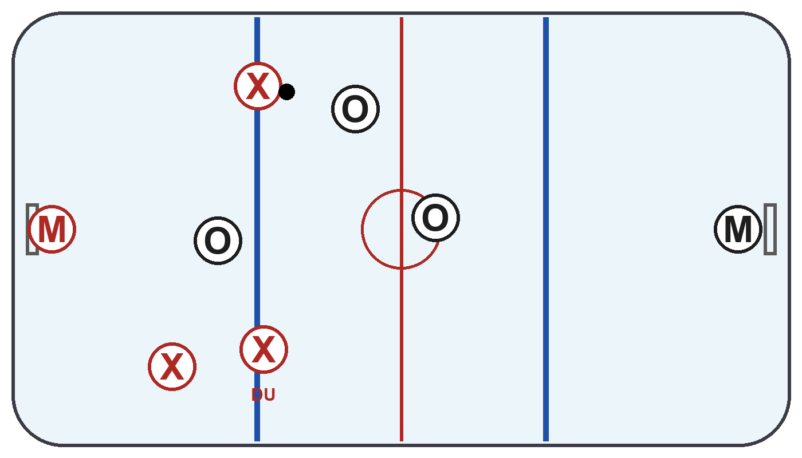
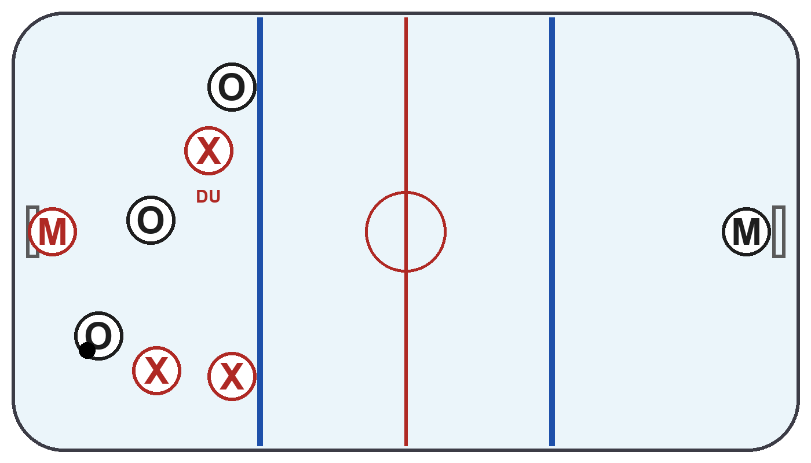

En lagkompis blir arg och skäller på en annan lagkompis efter ett misstag. Vad gör du?
Ni vinner stort och matchen är i praktiken redan avgjord. Hur väljer du att spela sista minuterna?
Du blir hårt tacklad (helt inom reglerna) och det gör ont. Hur reagerar du?
Tränaren byter ut dig mitt i en period du kände dig riktigt bra. Vad gör du på bänken?
En motståndare retas eller är taskig mot dig. Hur reagerar du?
Motståndarna har precis tagit pucken vid mittlinjen och är på väg mot ert mål.

✏️ Rita: vart åker DU i försvar?
En lagkompis har pucken vid kanten, men ingen är riktigt öppen för passning.

✏️ Rita: vart åker DU för att bli spelbar?
En lagkompis pressar puckbäraren i er egen zon - en motståndare blir öppen framför mål.

✏️ Rita: vart åker DU för att täcka?